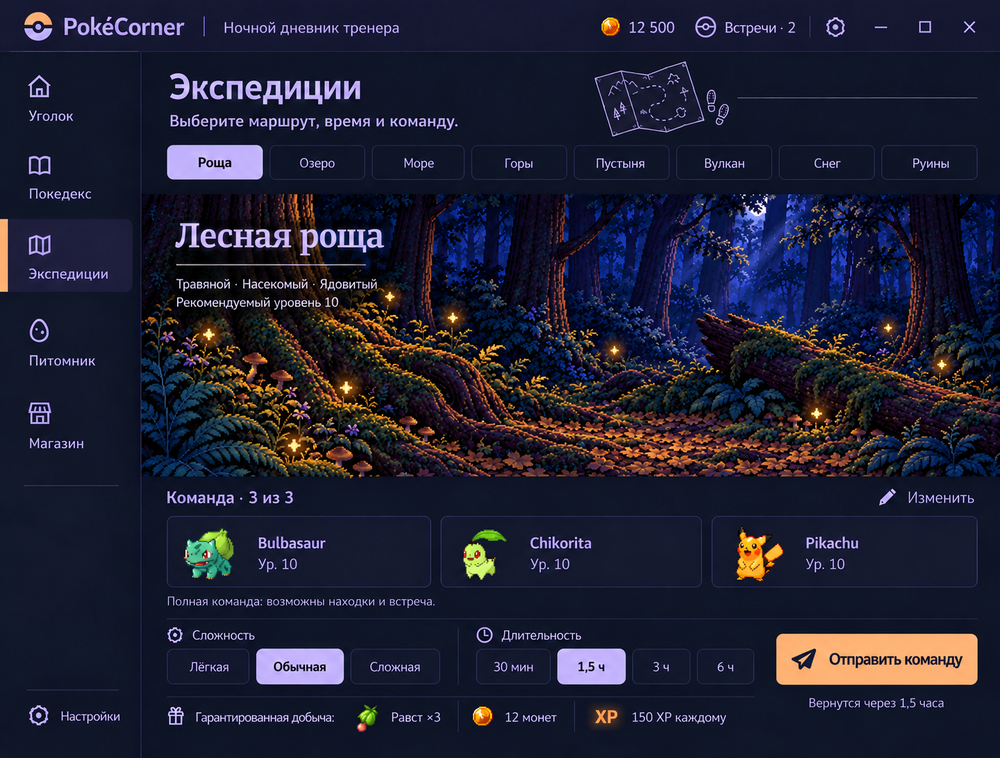
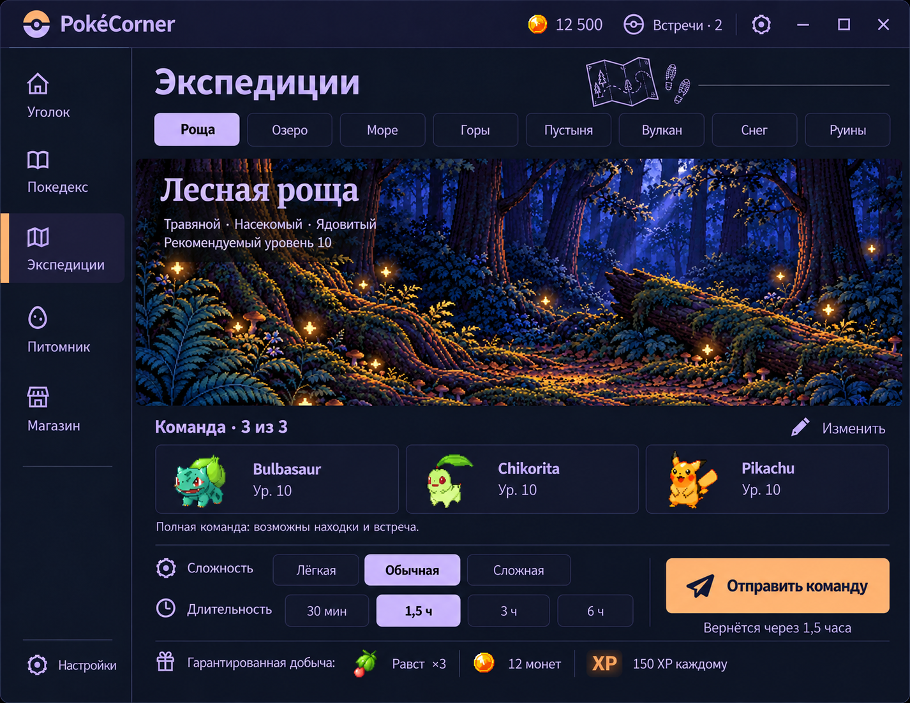
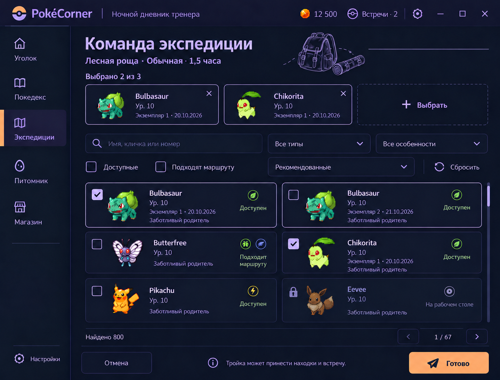
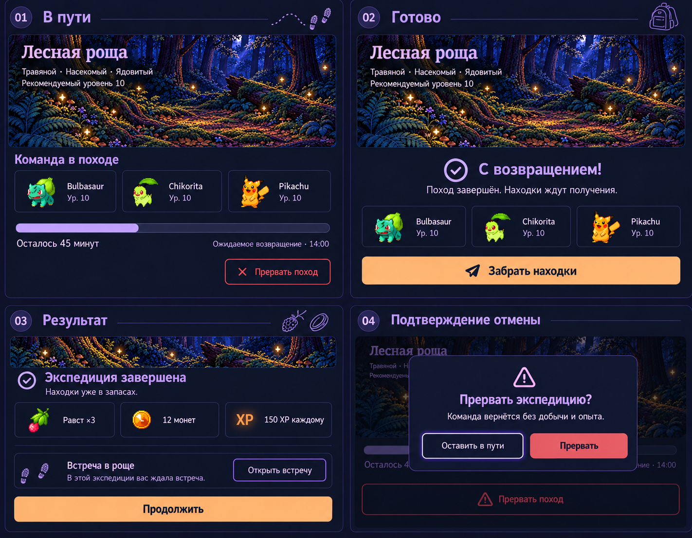
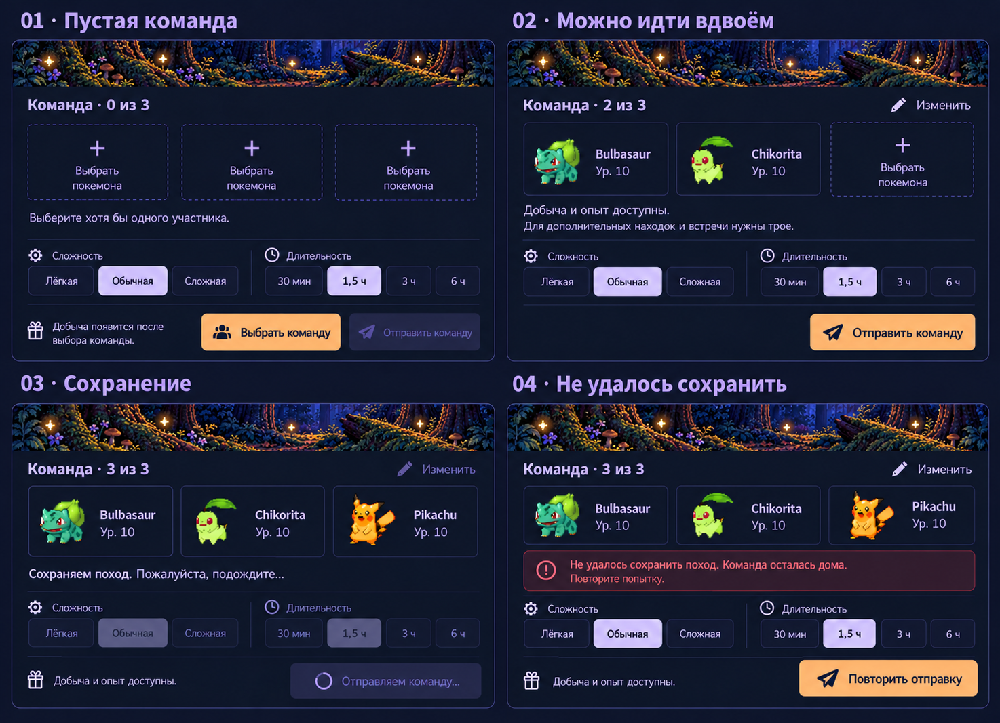

Пилот экспедиций — ревизия 2
Ночной дневник тренера · POKE-69 · 21 октября 2026. Визуально принято пользователем 2026-10-21; R3/POKE-68 ещё не начат, внедрения в WPF нет. Изображения созданы imagegen и не являются снимками запущенного приложения. Нажмите изображение, чтобы открыть оригинал.
Подготовка · 1000×760
Полный макет подготовки для целевого размера окна 1000×760 DIP.

Компактное окно · 840×650
Адаптация подготовки к компактному размеру; не простое уменьшение всего экрана.

Подбор команды
Точные экземпляры, черновик команды, фильтры и занятость.

Поход и результат
Фрагменты основного содержимого: в пути, готово, результат и отмена.

Пусто, небольшая команда, сохранение и отказ
Служебные и переходные состояния подготовки.

Отдельный фон рощи
Иллюстрация без текста, контролов и покемонов.